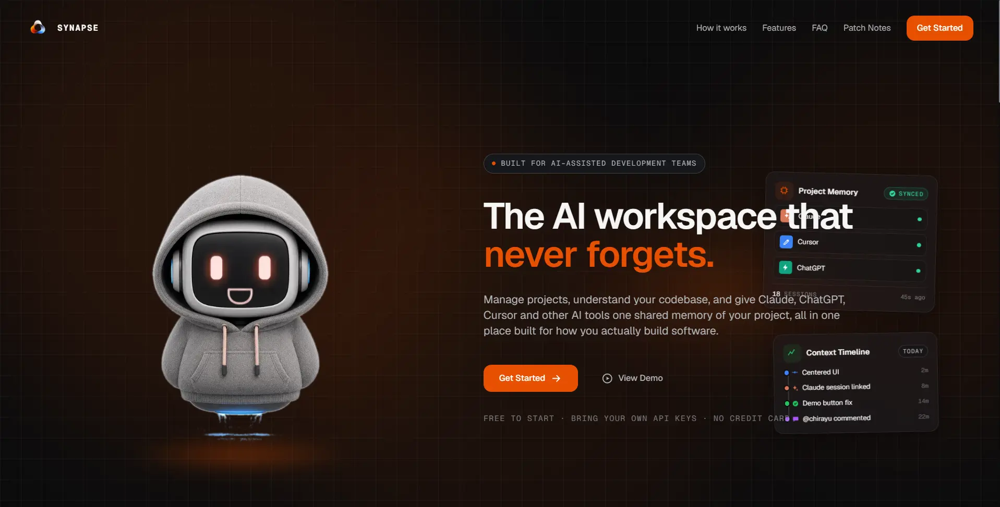
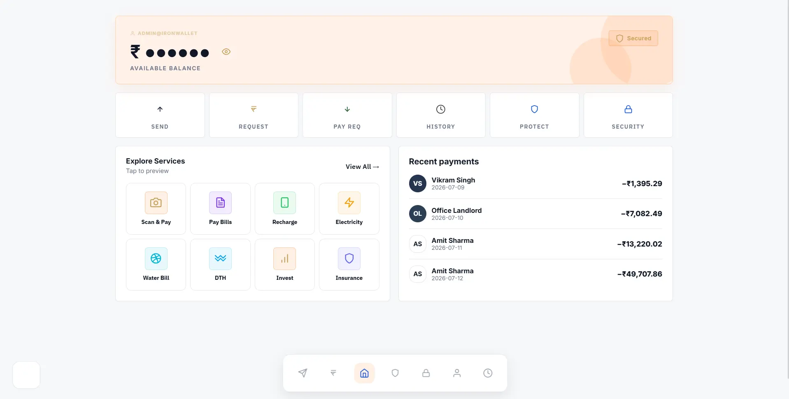
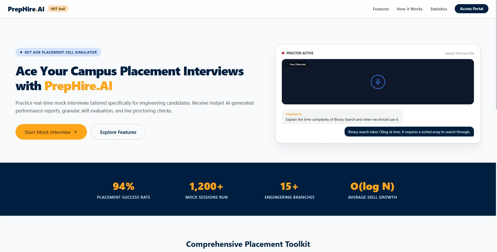
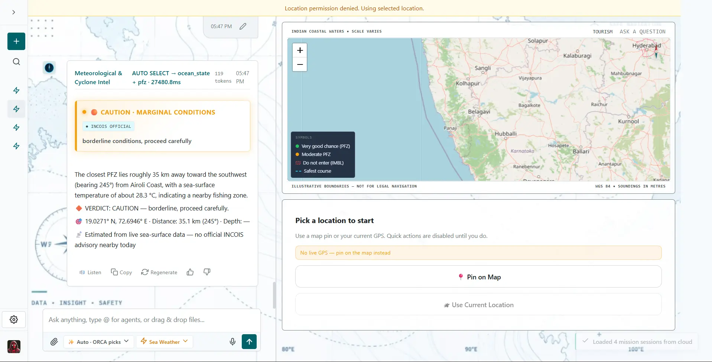

exp_01 · live
Synapse
A workspace for project tracking, GitHub repository intelligence, and preserving context between AI-assisted work sessions.
Open live site (Synapse)AI Developer Intern, Tronocity Labs
I build AI systems that see, reason and remember.
I take a problem from first principles, build the system, and test it against real constraints. Most interested in where applied AI meets solid engineering.

Real-world AI builds. More on GitHub

exp_01 · live
A workspace for project tracking, GitHub repository intelligence, and preserving context between AI-assisted work sessions.
Open live site (Synapse)
exp_02 · source
A digital wallet that scores transaction risk from behavioral signals, adds OTP verification, and surfaces scam intelligence.
View on GitHub (SACHET)
exp_03 · live
A placement-preparation platform with mock interviews, coding challenges, and structured learning resources.
Open live site (PrepHire AI)
exp_04 · source
An ocean-data assistant for fishing-zone, sea-surface-temperature and weather queries, built on INCOIS data with an agent-based backend, an ocean map interface, and AI-written answers.
View on GitHub (ORCA)exp_05 · source
Vision-based Incident Surveillance for Traffic & Assistance. A real-time CCTV AI system that detects road accidents and routes alerts to traffic police, hospital/EMS or police control based on severity.
View on GitHub (VISTA)
exp_06 · source
A desktop voice assistant with wake-word activation, conversational commands, and productivity automation.
View on GitHub (Phoenix)May 2026 – Present
Tronocity Labs
Building Gigzs/Akhrot, a memory layer for multi-LLM agents. Helped benchmark up to 58% lower token use.
May – Jul 2026
MITAOE Entrepreneurial Development Foundation
Led planning, UI/UX and workflows for TrafficBuddy, a traffic complaint app.
1st place
GDG MITAOE hackathon, for SACHET.
Open to internships and AI projects.